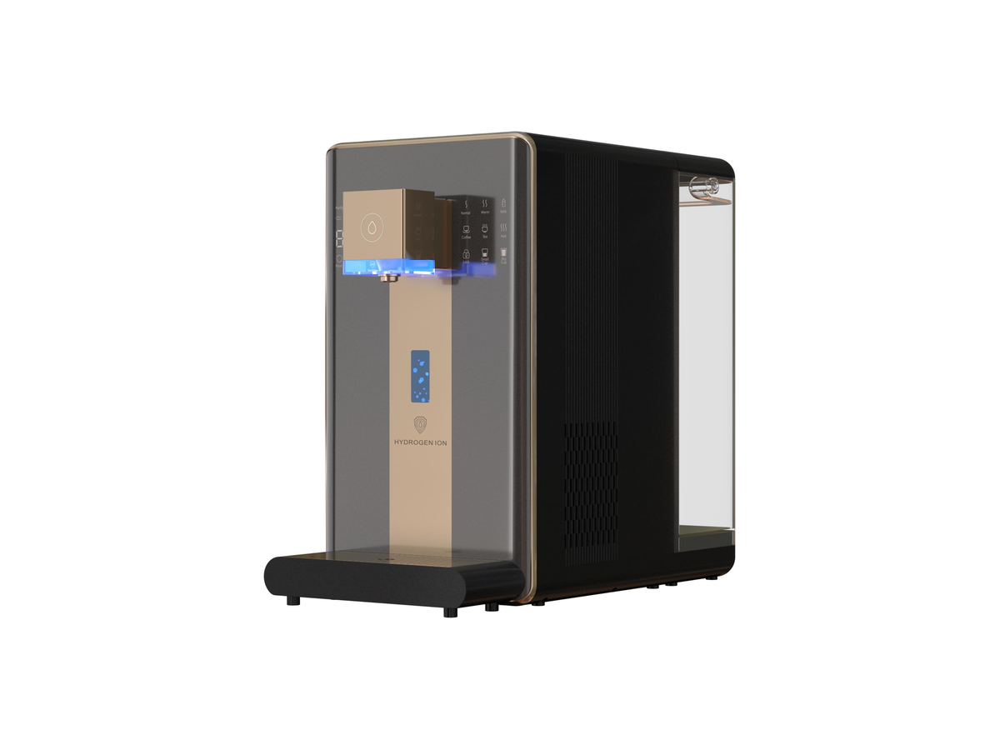
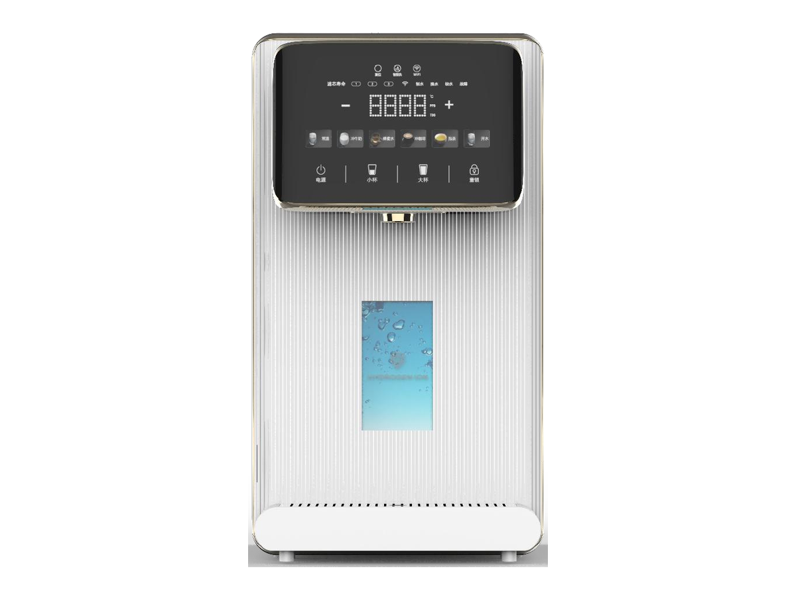
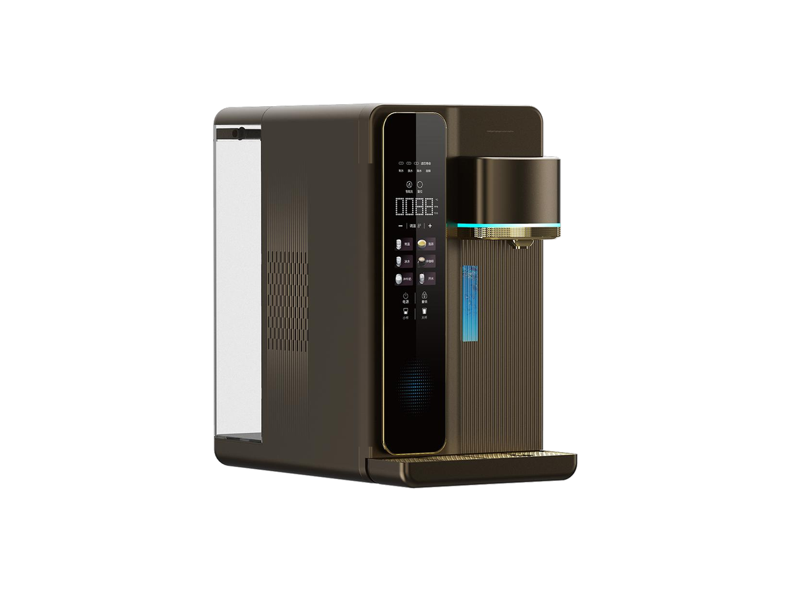

De comptoir
De comptoirRP-C07
Purificateur RO avec carafe chauffante
SKU: RP-C07
MOQ : à confirmer lors de la demande
Accueil/Produits/Systèmes de comptoir/ RP-C04

Systèmes de comptoir
Distributeur RO de comptoir d'eau hydrogénée (W23)
RP-C04 — Distributeur RO de comptoir d'eau hydrogénée. Spécification clé : Membrane RO / production 200 GPD / 30 L/h. Les spécifications sont confirmées par modèle et par commande. Quatre autres variantes d'eau hydrogénée de la même série (W19, W20, W22 et W25) sont présentées ci-dessous.
La tension / fréquence est configurable selon le pays de destination. Les autres configurations sont confirmées par commande.
RP-C04 est un distributeur RO de comptoir d'eau hydrogénée construit autour du modèle principal (W23), avec quatre autres variantes d'eau hydrogénée (W19, W20, W22 et W25) dans la même série. Le modèle principal fonctionne à 200 GPD / 30 L/h avec un volume nominal d'eau purifiée de 2000 L, une filtration composite PAC + RO + minéralisation naturelle et une électrolyse SPE pour la génération d'hydrogène. Toute la série partage le mélange gaz-liquide SUPERMIX, la filtration RO, le refroidissement à semi-conducteur, l'UVC, le chauffage rapide en 3 secondes et un grand réservoir d'eau.
Quelle est la quantité minimale de commande ?
La première commande est de 200 unités par modèle, et les réassorts sont de 500 unités.
Puis-je commander un échantillon avant une commande en volume ?
Oui. Les échantillons sont prêts en 15 jours, et les frais d'échantillon sont remboursés sur votre première commande en gros. Les commandes en gros prennent 40 jours après approbation de l'échantillon et sont expédiées FOB Shenzhen.
En quoi les cinq variantes diffèrent-elles ?
Les valeurs complètes de capacité, dimensions et volume nominal sont indiquées pour le modèle principal (W23). Les quatre autres variantes partagent les caractéristiques de la série et diffèrent par la finition. Coter comme RP-C04 et préciser la variante ; les autres spécifications de W19, W20, W22 et W25 sont confirmées par commande.
Survolez l'image d'une variante pour voir ses spécifications. Sur écran tactile, touchez une image.




Spécifications complètes de chaque variante, côte à côte. Le tableau de spécifications ci-dessous montre les valeurs de RP-C04.
| Spécification | RP-C04-1 — modèle principal (W23) | RP-C04-2 — variante hydrogène (W19) | RP-C04-3 — variante hydrogène (W20) | RP-C04-4 — variante hydrogène (W22) | RP-C04-5 — variante hydrogène (W25) |
|---|---|---|---|---|---|
| Forme | Distributeur d'eau hydrogénée de comptoir | Distributeur d'eau hydrogénée de comptoir | Distributeur d'eau hydrogénée de comptoir | Distributeur d'eau hydrogénée de comptoir | Distributeur d'eau hydrogénée de comptoir |
| Membrane RO / production | 200 GPD / 30 L/h | À confirmer par commande | À confirmer par commande | À confirmer par commande | À confirmer par commande |
| Volume nominal d'eau purifiée | 2000 L | À confirmer par commande | À confirmer par commande | À confirmer par commande | À confirmer par commande |
| Dimensions | 475 × 240 × 430 mm | À confirmer par commande | À confirmer par commande | À confirmer par commande | À confirmer par commande |
| Contrôle de la température | 6 programmes de température réglables | À confirmer par commande | À confirmer par commande | À confirmer par commande | À confirmer par commande |
| Chauffage | 2200 W ; 18 L/h à ≥90°C | À confirmer par commande | À confirmer par commande | À confirmer par commande | À confirmer par commande |
| Génération d'hydrogène | Électrolyse SPE | À confirmer par commande | À confirmer par commande | À confirmer par commande | À confirmer par commande |
| Caractéristiques de la série | Mélange gaz-liquide SUPERMIX, filtration RO, refroidissement par semi-conducteur, UVC, chauffage rapide en 3 secondes, grand réservoir d'eau | Mélange gaz-liquide SUPERMIX, filtration RO, refroidissement par semi-conducteur, UVC, chauffage rapide en 3 secondes, grand réservoir d'eau | Mélange gaz-liquide SUPERMIX, filtration RO, refroidissement par semi-conducteur, UVC, chauffage rapide en 3 secondes, grand réservoir d'eau | Mélange gaz-liquide SUPERMIX, filtration RO, refroidissement par semi-conducteur, UVC, chauffage rapide en 3 secondes, grand réservoir d'eau | Mélange gaz-liquide SUPERMIX, filtration RO, refroidissement par semi-conducteur, UVC, chauffage rapide en 3 secondes, grand réservoir d'eau |
| Finition | Blanc | Noir / or | Blanc-argent | Blanc | Bronze-brun |
| Tension / fréquence | Configurable selon le pays de destination | Configurable selon le pays de destination | Configurable selon le pays de destination | Configurable selon le pays de destination | Configurable selon le pays de destination |
Les caractéristiques de la série sont celles indiquées pour la série W19 / W20 / W22 / W23 / W25 dans le catalogue. La capacité, les dimensions et le volume nominal de chaque variante W19, W20, W22 et W25 sont confirmés par commande — nous ne publions pas de valeurs non confirmées.
12 lignes de spécifications du catalogue ROPureOEM.
| Membrane RO / production | 200 GPD / 30 L/h |
|---|---|
| Volume nominal d'eau purifiée | 2000 L |
| Filtration | Composite PAC + RO + minéralisation naturelle |
| Génération d'hydrogène | Électrolyse SPE |
| Contrôle de la température | 6 programmes de température réglables |
| Chauffage | 2200 W ; 18 L/h à ≥90°C |
| Réservoirs | Eau brute 6 L ; eaux usées 2.5 L |
| Eau d'alimentation / pression de service | Eau du robinet municipale ; 4–38°C ; 0.4–0.8 MPa |
| Boîtier / poids net | ABS / 10.7 kg |
| Dimensions | 475 × 240 × 430 mm |
| Tension / fréquence | Configurable selon le pays de destination |
| Autres configurations | À confirmer par commande |
Les spécifications sont tirées du catalogue ROPureOEM. Lorsqu'une valeur n'est pas encore confirmée, elle est indiquée comme « Confirmé par commande » — nous ne publions pas de chiffres non confirmés.
De comptoirPurificateur RO avec carafe chauffante
SKU: RP-C07
MOQ : à confirmer lors de la demande
 De comptoir
De comptoirPurificateur de comptoir à cartouche tout-en-un
SKU: RP-C08
MOQ : à confirmer lors de la demande
 De comptoir
De comptoirPurificateur RO avec glace, eau chaude et eau froide
SKU: RP-C09
MOQ : à confirmer lors de la demande
 De comptoir
De comptoirRO de comptoir avec refroidissement par compresseur
SKU: RP-C10
MOQ : à confirmer lors de la demande